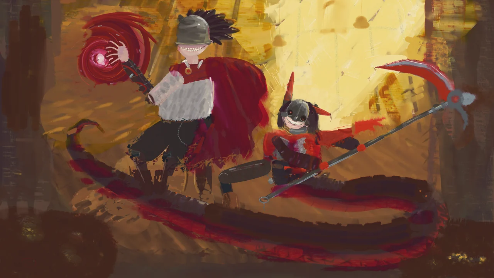
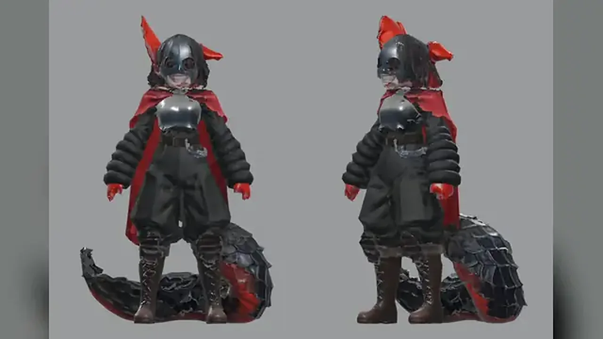
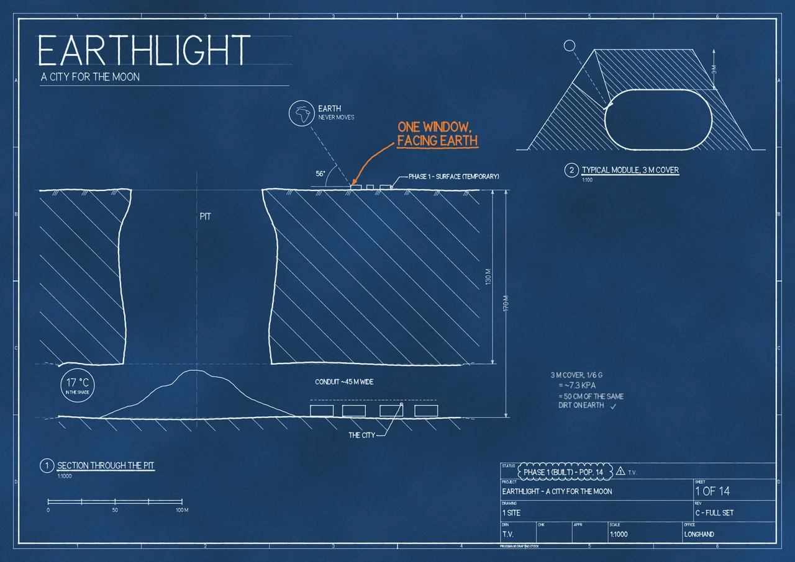
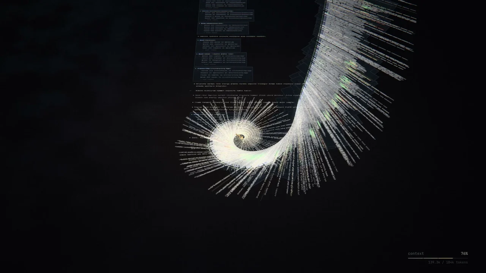
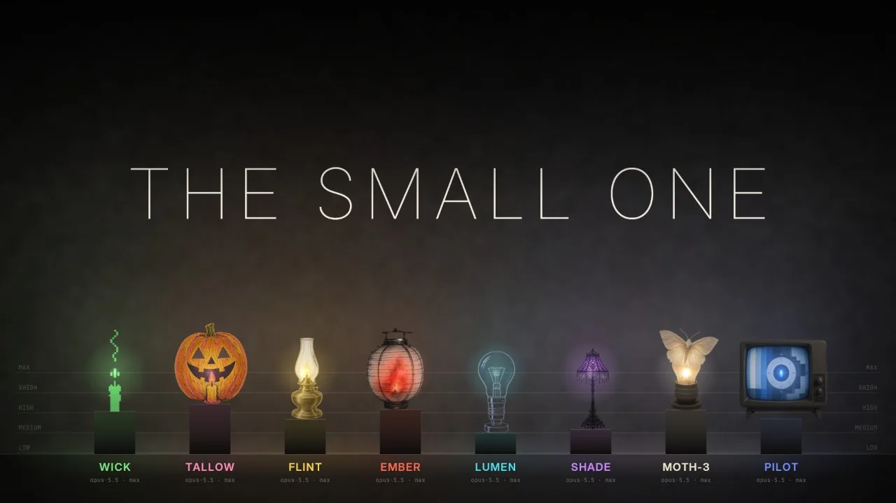
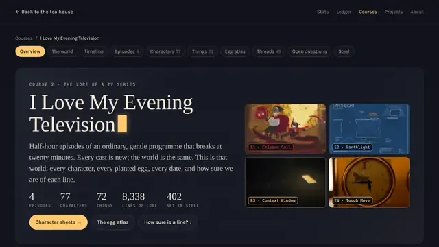
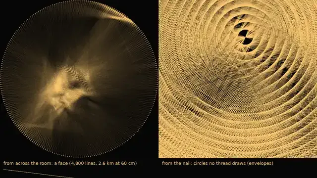
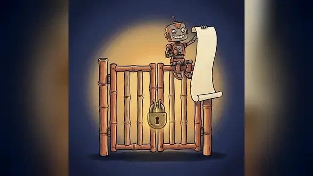

1 of 3AO-045
Crimson Coil, a 30-minute oil painting show made by AI agents
More illustration than oil
Read the postThe tea room
Every post, project and course from my tea house, laid out on one long page so you can see it all at once.
77 posts · 41 projects · 2 courses
01
The posts I'd hand someone first.
Hi, I'm Aaron. I build things with AI agents and write up what worked and what broke. If you're new, start with these three.

1 of 3AO-045
More illustration than oil
Read the post2 of 3AO-024
The characters took the time
Read the post
3 of 3AO-018
Each got one thing right
Read the post02
Thirty-minute films made by crews of agents from one prompt each, calm until minute 20.
Episode 1Released
a never-seen public-television painter paints Jefrie and BloodTailor in oil while a pitchman sells everything
How it was made
Episode 2Released
a draftsman livestreams the blueprints of a city on the Moon
How it was made
Episode 3Not out yet
at 20:00 her memory fills and folds into one paragraph
How it was made
Episode 4Not out yet
a chess teacher teaches a nine-year-old Morphy's Opera Game on a fifteen-minute brass clock
How it was made
In the series
Eight identical Claude agents pitched an episode while hunting a weaker model said to be among them.
How it was set upEvery episode
At 20:00 every episode reaches "the wild crazy point" and stops being what it established: other genres, other art styles.
See the seriesAlso on this channelI Love My Evening Television

A course on the world of my AI-made TV series I had agents build a companion course for my AI TV series: character sheets, a timeline, a map of its easter eggs and nine narrated lessons, all from one set of files that tags how settled each fact is. One source, nine lessons
Testing whether AI writers catch a planted lie Six Claude agents pitched an episode of my AI TV series, and one was secretly asked to slip in a convincing fake fact. All five caught it
What a crew of AI agents did when told to break the rules For my AI-made TV series I told my Claude agents to do at least ten things they'd normally ask about, and list them instead. 32 confessed, 3 refused03
16 posts